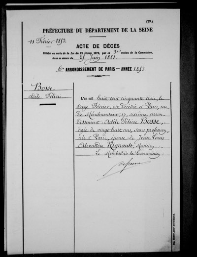
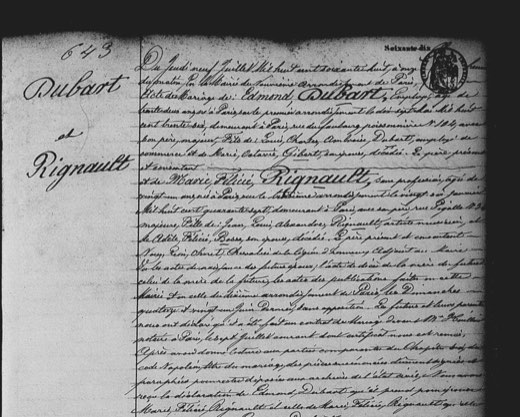
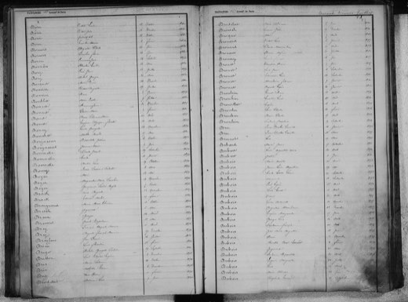
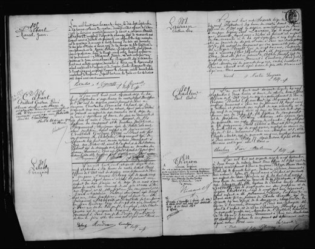
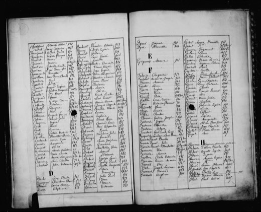
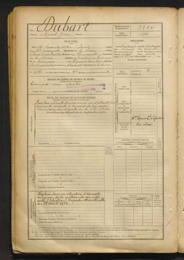

Sosa 5 · Côté Rignault
Marie Félicie Rignault
Née en 1847 à ParisMorte en 1918 à Paris
Grand-mère de René, côté paternel.
Récit
Marie Félicie naît le 26 janvier 1847, à neuf heures du matin, dans le 3e arrondissement de Paris, au domicile de ses parents, faubourg Saint-Denis. Son père, Jean Louis Alexandre Rignault, 39 ans, artiste musicien, déclare la naissance ; sa mère est Adèle Félicie Bosse, qu'il a épousée en novembre 1844. Parmi les témoins, un Alexandre de 66 ans, artiste musicien lui aussi, rue des Petites-Écuries, semble se dire aïeul paternel de l'enfant : Alexandre Rignault et Marie Anne Rosalie Lepinois sont ses grands-parents paternels, Félix Hippolyte Bosse et Marie Joséphine Gindre ses grands-parents maternels. Elle naît dans une famille de musiciens, puisque son oncle paternel, François Émile, l'est aussi ; un artiste musicien de Paris vit alors, disent les notes de l'historien, souvent modestement, entre petite bourgeoisie et monde du spectacle.
Elle a six ans quand sa mère meurt, le 11 février 1853, à 28 ans, rue de Ménilmontant. Aucun document ne dit qui l'a élevée ensuite ; on sait seulement qu'en 1868 elle vit avec son père. Sa fratrie est mal connue. Un frère, Eugène Émile, est attesté en 1876 : l'acte de naissance de son fils Marcel le dit « oncle maternel » de l'enfant, âgé de 25 ans, employé d'agent de change, et domicilié avec leur père ; son âge s'accorde avec un Eugène Émile né à Paris en mars 1851, sans que cela le prouve, et l'on ne sait pas si c'est l'« Eugène Rignault, son frère » que nomme le faire-part de 1918. L'arbre donne aussi une Cécile Alexandrine, née en 1849 et morte à trois ans, dont aucun acte n'a été lu.
Le 9 juillet 1868, à la mairie du 9e, elle épouse Edmond Dubart, employé de 32 ans, fils de Louis Charles Ambroise Dubart et de Marie Octavie Gibert, qui demeure encore avec son père faubourg Poissonnière ; elle a 21 ans et vit rue Pigalle, au n° 34, avec le sien. La rue Pigalle est alors, selon les notes sur le quartier, une rue de peintres, d'écrivains et de musiciens ; le faubourg Poissonnière est celle du Conservatoire, au n° 15. Quatre témoins signent : un docteur en médecine, un ancien avocat au Conseil d'État, un agent de change et un négociant, sans lien connu avec les Rignault. Le contrat, reçu deux jours plus tôt chez Me Huillier, n'a pas livré son contenu. La presse musicale des années 1839-1846 montre par ailleurs un violoncelliste « Rignault » jouant avec une « Madame Dubart » ; qu'il soit l'oncle de Marie Félicie est une hypothèse faible, et aucun acte ne relie les deux familles avant ce mariage.
Le couple s'installe dans le 17e arrondissement, aux Batignolles, quartier annexé à Paris en 1860, peuplé d'employés, d'artisans et d'artistes et coupé par la ligne de Saint-Lazare. Léon y naît le 18 avril 1869 ; son grand-père Rignault, 61 ans, vient en témoigner et signe « A. Rignault ». En octobre 1871, Paris sort du siège et de la Commune, et Marie Joséphine Gindre, veuve Bosse, meurt ; ses deux témoins sont le père et le mari de Marie Félicie, Edmond se disant « petit gendre » de la défunte et donnant l'adresse du 19 rue Beudant. Elle est aussi sociétaire de l'Association des artistes musiciens : l'annuaire de 1868 inscrit « Mme Marie-Félic. Dubart, née Rignault », et elle y figure encore en 1874 et 1875 ; la liste ne dit ni son instrument ni si elle enseigne, ni qui l'y a inscrite, son père musicien ou elle-même. En 1876, le couple demeure à Passy, dans le 16e arrondissement rattaché à Paris en 1860, au 19 rue de la Pompe : Edmond y est employé d'agent de change, comme son frère Eugène Émile, et elle, vingt-neuf ans, est dite sans profession. C'est là que naît le 14 septembre, à vingt heures, un second fils, Marcel Jean ; Edmond le déclare le 17, devant deux témoins de la famille de Marie Félicie, son père, 68 ans, artiste musicien, et son frère Eugène Émile, qui demeurent ensemble 12 rue de Miromesnil. Marcel mourra à Tours le 15 août 1899, à 22 ans, domicilié chez ses parents rue Taitbout ; deux amis déclarent le décès.
De 1876 à 1897, les actes disent peu d'elle. Son père meurt à Gisors le 29 août 1885, chez M. Passy ; les déclarants sont Louis Passy et François Émile, frère du défunt : Edmond n'y figure pas, ce que l'acte n'explique pas. Le 15 mars 1895, c'est Edmond, alors boulevard Haussmann, qui déclare avec Léon la mort de François Émile, oncle de Marie Félicie, célibataire, à 83 ans. À l'époque du recrutement de la classe 1896 (1896-1897), celle de son fils Marcel Jean, le couple demeure au 3 rue Taitbout, dans le 9e, où Marcel est aussi résidant ; en avril 1897, les bans du mariage de Léon, publiés au 9e arrondissement, le disent fils d'Edmond et de Marie Félicie Rignault ; au printemps 1897, il envoie de cette rue, dans le quartier de la Chaussée-d'Antin voisin des banques, le faire-part du mariage de Léon avec Jeanne Augustine Baron Marchal. Edmond meurt le 10 mai 1903, rue des Plantes ; elle est alors dite sans profession, à 56 ans, et reste veuve quinze ans. Il est inhumé à Montmartre, le « cimetière du Nord » ouvert en 1825, dans la concession 542, de 1871, celle des parents d'Edmond.
Elle meurt le 18 février 1918, à 9 h 45 : l'acte la fait mourir 2 rue Ambroise-Paré, dans le 10e, et le faire-part à l'hôpital Lariboisière ; que ce soit le même lieu est une déduction. L'acte la dit domiciliée 22 boulevard Saint-Denis. Le service a lieu le jeudi 21 février, à midi, à Saint-Vincent-de-Paul, et elle est inhumée le même jour à Montmartre, dans la concession 542, où repose Edmond. Son fils Léon y sera inhumé à son tour le 13 mai 1944 selon le registre de Montmartre, dans une concession dont le titre se lit mal ; qu'il s'agisse de la même, la 542, n'est qu'une hypothèse. Le journal « L'Employé », organe d'un syndicat chrétien d'employés, cite sa mort dans un numéro de 1918 comme celle de la mère d'un « camarade Léon Dubart », membre du Conseil syndical : ce Léon est bien son fils, que le journal avait déjà nommé en 1915 parmi les membres du Conseil, nommé maréchal des logis au 19e escadron du train. Le faire-part nomme son fils Léon et sa belle-fille, son petit-fils René, 18 ans, son frère Eugène Rignault et sa belle-sœur, ainsi que Maurice Dubart et sa femme, neveu et nièce, avec leurs enfants. Léon se remariera en 1923 avec Solange Gasnier. Sa succession est inscrite aux tables sous une orthographe déformée, « Regnaut Marie », avec deux déclarations dont on ignore le contenu. Les actes ne disent d'elle que son état de fille, d'épouse, de mère et de veuve : ce qu'elle a fait de sa vie, on ne le sait pas.
Contexte : recherches/generation-4/dubart-edmond/contexte-historien.md ; recherches/generation-4/dubart-edmond/contexte-historien-2.md ; recherches/generation-4/dubart-edmond/contexte-historien-3-lieux.md ; recherches/generation-5/rignault-lepinois/contexte/01-musiciens-rignault.md ; recherches/generation-5/rignault-lepinois/contexte/04-edmond-felicie-1868-1903.md.
Récit rédigé le 26 novembre 2026 à partir de la base, qui fait foi. Chaque marque ouvre la preuve du passage.
Famille
Frères et sœurs
Autres liens dits par les actes
- Edouard Jean « René » DUBART — Marie est « grand-mère » de cette personne
- Alexandre RIGNAULT — grand-père paternel
- Marie Josephine GINDRE — Marie est « petite-fille » de cette personne
- Eugène RIGNAULT — frère
- Maurice DUBART — neveu
Sa vie dans le temps
- Monarchie de Juillet
- Marie Félicie RIGNAULT est née le 26/01/1847 à 9 h du matin, à Paris (3e arr.), au domicile de ses parents, faubourg Saint-Denis. — Paris vérifié
- Marie Félicie RIGNAULT est la fille de Jean Louis (Alexandre) RIGNAULT et d'Adèle Félicie BOSSE, époux. — Paris vérifié
- La fiche de naissance de Marie Félicie Rignault (26 janvier 1847) porte un chiffre d'arrondissement ancien différent de la mention « 3e arrondissement » de l'acte de naissance. — Paris non résolu
- Un témoin prénommé Alexandre, 66 ans, artiste musicien, rue des Petites-Écuries, est dit « aïeul paternel de l'enfant » dans l'acte de naissance de Marie Félicie (1847). — Paris partiellement vérifié
- Second Empire
- Domicile : habite avec son père rue Pigalle à son mariage — selon l'arbre transmis non vérifié
- En 1868, l'Annuaire de l'Association des artistes musiciens inscrit parmi ses sociétaires « DUBART (Mme Marie-Félic.), née RIGNAULT » ; elle figure encore en 1874 et 1875 (« DUBART (Mme), née RIGNAULT ») — Paris vérifié
- Le contrat de mariage d'Edmond Dubart et de Marie Félicie Rignault est reçu le 7/07/1868 par Me Paul Huillier (étude VI) : répertoire n° 452, en minute, « Dubart (entre M. Edmond) dt 104 rue du faubourg Poissonnière à Paris et Mlle Marie Félicie Rignault dt 34 rue Pigalle », enregistré le 8 juillet (droits 487,60 F) ; minute MC/ET/VI/1220, non numérisée. L'acte de mariage porte « Me Huillier » (lecture antérieure « Mouillin [?] » erronée) — Paris vérifié
- Le 9 juillet 1868, à la mairie du 9e, Edmond Dubart, employé, 32 ans, né Paris 1er le 17/05/1836, demeurant 104 rue du Faubourg-Poissonnière avec son père, épouse Marie Félicie Rignault, 21 ans, née Paris 3e en janvier 1847, demeurant rue Pigalle 34 avec son père Jean Louis Alexandre Rignault, artiste musicien (mère Adèle Félicie Bosse, décédée) ; contrat devant Me Huillier (lecture corrigée le 03/11/2026, A0548) le 7/07/1868 ; témoins : Joseph Éléonor Pressat [?], docteur en médecine ; Pierre Valton, ancien avocat au Conseil d'État ; Philippe Hébert, agent de change ; Pierre Hubert Cary, négociant — Paris vérifié
- Léon DUBART est le fils légitime d'Edmond DUBART et de Marie Félicie RIGNAULT. — Paris vérifié
- Jean Louis Alexandre RIGNAULT, 61 ans, artiste musicien, est témoin de la naissance de Léon et dit « aïeul de l'enfant » ; il est encore vivant en avril 1869. — Paris vérifié
- Troisième République
- Domicile : 19 rue Beudant à Paris, adresse de la mère de Marie Félicie morte en 1871 (Paris, 17ème) — selon l'arbre transmis — Paris non vérifié
- Marcel Jean Dubart naît le 14/09/1876 à 20 h, au domicile de ses parents, 19 rue de la Pompe (16e arrondissement), fils légitime d'Edmond Dubart et de Marie Félicie Rignault ; la naissance est déclarée le 17/09/1876 à 10 h 30 — Paris vérifié
- En septembre 1876, Edmond Dubart et Marie Félicie Rignault demeurent au 19 rue de la Pompe, à Paris, 16e arrondissement (Passy) — Paris vérifié
- En septembre 1876, Edmond Dubart, 40 ans, est « employé d'agent de change » ; Marie Félicie Rignault, 29 ans, est sans profession — Paris vérifié
- Domicile : 17 boulevard Haussmann à Paris — selon l'arbre transmis non vérifié
- La fiche matricule de Marcel Jean Dubart (classe 1896, matricule 3864, n° 254 du tirage du 9e arrondissement) le dit né le 14/09/1876 à Paris (16e), fils d'Edmond et de Rignault Marie Félicie — Paris vérifié
- À l'époque du recrutement de la classe 1896 (1896-1897), Edmond Dubart et Marie Félicie Rignault demeurent 3 rue Taitbout, Paris 9e, où Marcel Jean est aussi résidant — Paris vérifié
- Les bans du mariage de Léon DUBART (21 boulevard Haussmann ; fils d'Edmond et de Marie Félicie RIGNAULT) et de Jeanne Augustine BARON (à Tours ; filiation : Anne BARON) ont été publiés le 4 avril 1897 au 9e arrondissement de Paris, selon deux fiches d'un index de publications de mariage (Paris et banlieue). — Paris vérifié
- Le faire-part du 27/04/1897 émis de Paris par M. et Mme Edmond Dubart (3 rue Taitbout) annonce le mariage de « Monsieur Léon Dubart, leur fils » avec Mademoiselle Augustine Baron. — Paris partiellement vérifié
- Domicile : 3 rue Taitbout à Paris (selon acte de mariage de leur fils Léon) (?, 9ème) — selon l'arbre transmis non vérifié
- Selon l'acte de décès de Marcel Jean Dubart (Tours, 15/08/1899), il est « fils de Edmond Dubart et de Marie Félicie Rignault son épouse », domicilié « chez ses père et mère, rue Taitbout n° 3 », né « (seizième arrondissement) le quatorze septembre mil huit cent soixante-seize » — Tours vérifié
- À son décès en 1903, Edmond DUBART est marié à Marie Félicie RIGNAULT, 56 ans, sans profession. — Paris vérifié
- Edmond Dubart figure au n° 50 de la table des successions et absences du 8e bureau (mois de mai 1903) : 66 ans, décédé le 10 [mai], lieu du décès « 66 R. des Plantes » et domicile « 3 R. Taitbout », époux de Marie [Rignault ?], sans profession indiquée — Paris vérifié
- Domicile : 22 boulevard St Denis (Paris) — selon l'arbre transmis — Paris non vérifié
- Domicile : 28 boulevard Bonne Nouvelle, vraisemblablement chez son fils Léon (Paris) — selon l'arbre transmis — Paris non vérifié
- Domicile : 22 boulevard St Denis — selon l'arbre transmis non vérifié
- Marie Félicie Rignault, veuve Dubart, est inscrite sous le nom « Regnaut Marie », sans profession, 71 ans, boulevard Saint-Denis 22, « V. Dubart », n° 27 de la table des décès et successions du 9e bureau, février 1918 (jour du décès lu 21 [?]) ; dépôt en mars 1918 ; déclarations du 14 août 1918 (n° 1561) et du 21 janvier 1919 (n° 137 [?]) — Paris partiellement vérifié
- Marie Félicie RIGNAULT, veuve d'Edmond DUBART, est décédée le 18/02/1918 à 9 h 45, rue Ambroise-Paré n° 2, Paris (10e arr.). — Paris vérifié
- À son décès (1918), Marie Félicie RIGNAULT est veuve d'Edmond DUBART et domiciliée boulevard Saint-Denis n° 22 (Paris). — Paris vérifié
- Le faire-part imprimé annonce que Madame veuve DUBART née Marie RIGNAULT est décédée le 18/02/1918, munie des sacrements, à l'hôpital Lariboisière, à 71 ans. — Paris partiellement vérifié
- Le lieu de décès « rue Ambroise-Paré 2 » (acte de 1918) est l'hôpital Lariboisière nommé par le faire-part (déduit). — Paris partiellement vérifié
- Le faire-part nomme « Monsieur et Madame Léon DUBART, ses fils et belle-fille » ; l'épouse de Léon n'est pas nommée. — Paris partiellement vérifié
- Le faire-part annonce pour Marie Félicie RIGNAULT, veuve DUBART : convoi, service et enterrement le jeudi 21/02/1918 à midi à l'église Saint-Vincent-de-Paul, puis inhumation au cimetière Montmartre. — Paris partiellement vérifié
- Marie Félicie Rignault, « V^ve Dubart née Rignault », est inscrite au répertoire d'inhumation du cimetière de Montmartre sous le n° 1058 le 21 février 1918 : division 9, ligne 3, n° 34, concession 542 de 1871, « ch. St Nicolas » — Paris vérifié
- En juin 1923, Léon DUBART a 54 ans, est représentant de commerce, domicilié 28 boulevard Bonne-Nouvelle, et fils d'Edmond DUBART et de Marie Félicie RIGNAULT, décédés. — Paris vérifié
- Guerre et Libération
- À son décès, Léon DUBART est dit fils d'Edmond DUBART et de Marie Félicie RIGNAULT, décédés, et né à Paris (17e) le 18/04/1869. — Paris vérifié
Lieux
- Paris 28 mentions
Documents (37)










Autres sources citées
- Annuaire de l'Association des artistes musiciens, volumes 1844-1875 : listes des sociétaires (recherche plein texte « Dubart » dans chaque volume ; lignes relues en OCR pour 1844, 1847, 1848, 1851) Annuaire, almanach · BnF, Gallica
- Fiches de « Publications de Mariage Paris et Banlieue » (GénéaService, genealogie.com), Dubart Léon × Baron Jeanne Augustine, publication du 04/04/1897, Paris 9e (2 fiches : côté épouse, côté époux) Site web
- « L'Employé » (Paris), rubrique « Notre Syndicat au Champ d'honneur — Citations et promotions » Presse · Gallica (BnF)
- « L'Employé : organe du Syndicat des employés du commerce et de l'industrie » (Paris), numéro de 1918 (extrait indexé Geneanet, recherche « Dubart Léon ») Presse · Geneanet, fonds Bibliothèque (index OCR)
- « L'Employé : organe du Syndicat des employés du commerce et de l'industrie » (Paris), numéro de 1922 (extrait indexé Geneanet, recherche « Dubart Léon ») Presse · Geneanet, fonds Bibliothèque (index OCR)
- Mariage de Jean Louis Alexandre Rignault et Adèle Félicie Bosse, Paris 6e ancien, novembre 1844 (acte rétabli en vertu de la loi du 12 février 1872) Acte d'état civil · Archives de Paris (état civil reconstitué)
- Décès de Marie Joséphine Gindre, veuve Bosse, Paris 17e, acte du 10 octobre 1871 Acte d'état civil · Archives de Paris · V4E 4723
- Faire-part de mariage de Léon Dubart et Mademoiselle Augustine Baron, envoyé par M. et Mme Edmond Dubart, Paris (3 rue Taitbout), 27 avril 1897 Document de famille · Famille Robert
- Naissance de Marie Félicie RIGNAULT, Paris 3e arr., 26/01/1847 (déclarée le 27/01/1847) : expédition de l'acte reconstitué (loi du 12/02/1872) Acte d'état civil · Archives de Paris (reconstitution, Préfecture de la Seine) · Extrait déposé n° 315 869
- Décès d'Edmond DUBART, Paris 14e arr., 10/05/1903 (acte dressé le 12/05/1903) Acte d'état civil · Archives de Paris · 14D 202
- Transcription au 9e arr. (26/06/1903) de l'acte de décès d'Edmond DUBART Acte d'état civil · Archives de Paris · 9D 97
- Décès de Marie Félicie RIGNAULT, veuve DUBART, Paris 10e arr., 18/02/1918 Acte d'état civil · Archives de Paris · 10D 368
- Faire-part de décès de Madame veuve DUBART née Marie RIGNAULT, 18/02/1918 (imprimé, bordure noire) Document de famille · Famille Robert (documents reçus le 02/11/2026)
- Le Petit Marseillais, 12/04/1929, p. 5 : avis de remerciements pour le décès de M. Eugène RIGNAULT (capture Retronews) Presse · Retronews (BnF)
- Naissance de Léon DUBART, Paris 17e arr., acte dressé le 20/04/1869 Acte d'état civil · Archives de Paris · V4E 2064
- Registre matricule de Léon DUBART, classe 1889, n° matricule 1452, 9e arr. de Paris Dossier militaire · Archives de Paris (registres matricules)
- Registre matricule d'André Émile François RIGNAULT, classe 1907, n° matricule 1389 Dossier militaire · Archives (dépôt non visible sur l'image)
- Décès de Léon DUBART, Paris 15e arr., 11/05/1944 (acte dactylographié) Acte d'état civil · Archives de Paris · 15D 399
- Mariage de Léon DUBART et Solange GASNIER, Paris 12e arr., 02/06/1923 : photocopie conforme délivrée le 15/06/2011 Acte d'état civil · Mairie du 12e arrondissement de Paris (copie)
- Revue et gazette musicale de Paris, n° du 24/03/1839 : « Madame Dubart et M. Deshayes » (H. Blanchard) Presse · Internet Archive (numérisation d'un volume imprimé) · revueetgazettemu18396pari, djvu.txt l. 17159-17187
- Revue et gazette musicale de Paris, vol. 1840 : concerts de mars-avril et Senlis (nov. 1840) Presse · Internet Archive · revueetgazettemu18407pari, l. 30574, 33885, 37660, 92356
- Notices SIV : notaire Achille Descours (FRAN_NP_012407, étude CXI, 25/07/1846-11/09/1860, 1 rue de Provence) ; minutes Huillier (FRAN_IR_041232, MC/ET/VI/1220) Inventaire d'archives · Archives nationales (SIV) · FRAN_NP_012407 ; FRAN_IR_043312 ; FRAN_IR_041232
- Table des décès et successions, 9e bureau, lettre D, février 1918 (images 115-118) : lecture des noms, aucun Dubart Dossier administratif · Archives de Paris · DQ8 2917
Ce qu'on ignore
Aucune inscription « Dubart » n'a été lue dans la table des décès et successions du 9e bureau, lettre D, février 1918 (n° 1 à 56) : Marie Félicie y est classée à la lettre R (A0755)
recherche infructueuse Lecture rapide, non exhaustive des colonnes de droite ; une inscription double (D et R) n'est pas exclue en dehors de février. · A0756
Aucun document lu ne dit qui a élevé Marie Félicie Rignault (6 ans) après la mort de sa mère le 11/02/1853 ; en 1868 elle vit avec son père, rue Pigalle 34 (A0258).
non résolu Ne dit rien de 1853 à 1868 : la grand-mère maternelle (Gindre, rue Beudant en 1871) et le grand-père paternel (mort en 1858) sont des possibilités non documentées, non des faits. Recherches restantes : recensement de 1872 ou autre (Paris, existence et lacunes à vérifier), tables de succession Bosse/Rignault, contrat de mariage de 1868. · A0766
La fiche de naissance de Marie Félicie Rignault (26 janvier 1847) porte un chiffre d'arrondissement ancien différent de la mention « 3e arrondissement » de l'acte de naissance.
non résolu Écart de numérotation possible (arrondissements/quartiers) ou erreur de lecture ; aucune conséquence sur l'identité (nom, prénoms et date identiques). Non résolu, sans enjeu généalogique. · A0775
Quel est le lien entre l'Eugène RIGNAULT mort avant avril 1929 (avis de Marseille), André Émile François RIGNAULT (né en 1886, Marseille) et Eugène RIGNAULT, frère de Marie Félicie (faire-part de 1918) ?
partiel · 2026-11-02 — Non établi. Lu : avis de 1929 (père d'André, Jane, Cécile) AP120 ; fiche d'André, fils d'Eugène Émile, Marseille AP119 ; frère Eugène au faire-part AP13. Liens proposés à titre d'hypothèses seulement : AP121, AP122. Pistes : Acte de naissance d'André (Saône-et-Loire, 1886, canton de Chalon-sur-Saône) ; mariage d'Eugène Émile Rignault × Marie Quint [?] ; acte de naissance d'Eugène (Paris, 1848-1865 ?) ; tables de successions et décès de Marseille (1929) ; registre matricule d'Eugène (classe 1868-1885) ; recherche Gallica/Retronews du décès d'Eugène Rignault. · R0117
Série B : Marie Félicie RIGNAULT (P5234) : succession 1918 (table du bureau compétent pour le 10e), inhumation de février 1918 au registre de Montmartre, enfance (mère morte en 1853), mariage de son père
partiel · 2026-11-09 — TROUVÉ : inscription à la table des successions du 9e bureau, février 1918, sous « Regnaut Marie », 71 ans, 22 boulevard Saint-Denis, « V. Dubart », deux déclarations (14/08/1918 n° 1561 ; 21/01/1919 n° 137 [?]) (A0755) ; inhumation le 21/02/1918, Montmartre division 9 ligne 3 n° 34, concession 542 (A0757). INFRUCTUEUX : rien sous la lettre D pour février 1918 (A0756). Mariage des parents : déjà en base (A0295, 10/11/1844, 6e ancien). Enfance : non éclaircie, aucune source nouvelle ouverte ; le dossier recherches/generation-5/rignault-lepinois n'a pas été rouvert (consigne : ne pas le refaire). Pistes : Héritiers : déclarations de succession 1918-1919 du 9e bureau (DQ7, salle de lecture, communicables car > 50 ans) ; inventaire / dépôt de mars 1918 ; relire le jour « 21 » et le nom « Regnaut » ; actes Bosse/Gindre pour l'enfance (Félix Hippolyte Bosse mort 1859 ; Marie Joséphine Gindre, sa grand-mère, habite 19 rue Beudant en 1871) ; faire-part ou presse 1918. · R0276
Qui a élevé Marie Félicie Rignault (6 ans) après la mort de sa mère en 1853 ?
infructueuse · 2026-11-10 — Non établi (A0766) : aucun document lu entre 1853 et 1868. Pistes : Recensement de 1872 (Paris) ou autres listes ; table de succession de Jean Louis Alexandre Rignault (1885) et de Marie Joséphine Gindre (1871) ; acte de mariage de 1868 (profession et domicile des témoins déjà lus : aucun lien avec les Rignault). · R0288
Bilan de consolidation des ascendants de Marie Félicie Rignault (Sosa 5) : jusqu'où remonter, quelles pistes restent utiles ?
partiel · 2026-11-25 — Décision de Jessica (25/11/2026) : s'arrêter à la génération de Jean Alexandre Dubart (Sosa 16), soit les Sosa 20 à 23 (Alexandre Rignault, Marie Anne Rosalie Lepinois, Félix Hippolyte Bosse, Marie Joséphine Gindre). Les Sosa 40 à 47 (Rignault × Navarre, Lepinois × Trousselle, Bosse × Mahieu, Gindre × Dieu) sont HORS PÉRIMÈTRE : fiches conservées, aucune recherche nouvelle. ARRÊT JUSTIFIÉ pour Jean Louis Alexandre Rignault (Sosa 10 : décès 1885 lu, naissance et mariage connus par fiches seules, originaux détruits en 1871 ; 7 ou 9 janvier 1808 non tranchable, on garde les deux dates ; carrière d'orchestre : almanachs 1828-1847 épuisés, aucun prénom) et pour Adèle Félicie Bosse (Sosa 11 : naissance 1825 par fiche sans parents, décès 1853 lu) ; arrêt aussi sur l'identification des musiciens Rignault par les almanachs. Pistes : PISTES UTILES (4, par rendement) : (1) mort de Félix Hippolyte Bosse, 1849 (6e ancien) ou 1859 (8e ancien) : lire les deux fiches/actes reconstitués (âge, conjointe, profession) ; demander d'abord à la famille Robert le fichier « D Bosse Felix 1849.jpg » (DOC-O18470, non récupéré) [R0032, R0104] ; (2) mariage Bosse × Gindre du 21/02/1824 (5e ancien) : un acte pour les Sosa 22 et 23 (âges, lieux de naissance, profession de Bosse) ; une seule tentative dans les actes reconstitués ; (3) naissances de Bosse (Beauvais, 1795 selon l'arbre) et de Marie Anne Rosalie Lepinois (Noyon, vers 1776) aux AD de l'Oise : site bloqué aux outils, à consulter par Jessica dans son navigateur [R0070] ; s'arrêter à l'acte, sans remonter aux parents ; (4) mariage Rignault × Lepinois du 21/08/1807 (11e ancien) : une tentative dans les actes reconstitués (5Mi1) pour savoir si Jean Édouard Amélie (1804) est reconnu et qui est son père [R0037, R0103]. Hors utilité : succession d'Alexandre Rignault 1858 (1er bureau n° 289), salle de lecture pour un gain faible. · R0305
Continuer l'exploration
Dossier complet : toutes les informations et leurs sources
Sosa 5.
Biographie
Récit rédigé le 2026-11-26 à partir de la base, qui fait foi. Les crochets renvoient aux assertions (onglet Toutes les informations).
Marie Félicie naît le 26 janvier 1847, à neuf heures du matin, dans le 3e arrondissement de Paris, au domicile de ses parents, faubourg Saint-Denis. Son père, Jean Louis Alexandre Rignault, 39 ans, artiste musicien, déclare la naissance ; sa mère est Adèle Félicie Bosse, qu'il a épousée en novembre 1844. Parmi les témoins, un Alexandre de 66 ans, artiste musicien lui aussi, rue des Petites-Écuries, semble se dire aïeul paternel de l'enfant : Alexandre Rignault et Marie Anne Rosalie Lepinois sont ses grands-parents paternels, Félix Hippolyte Bosse et Marie Joséphine Gindre ses grands-parents maternels. Elle naît dans une famille de musiciens, puisque son oncle paternel, François Émile, l'est aussi ; un artiste musicien de Paris vit alors, disent les notes de l'historien, souvent modestement, entre petite bourgeoisie et monde du spectacle. [A0360, A0361, A0362, A0364, A0306, A0258, A0318]
Elle a six ans quand sa mère meurt, le 11 février 1853, à 28 ans, rue de Ménilmontant. Aucun document ne dit qui l'a élevée ensuite ; on sait seulement qu'en 1868 elle vit avec son père. Sa fratrie est mal connue. Un frère, Eugène Émile, est attesté en 1876 : l'acte de naissance de son fils Marcel le dit « oncle maternel » de l'enfant, âgé de 25 ans, employé d'agent de change, et domicilié avec leur père ; son âge s'accorde avec un Eugène Émile né à Paris en mars 1851, sans que cela le prouve, et l'on ne sait pas si c'est l'« Eugène Rignault, son frère » que nomme le faire-part de 1918. L'arbre donne aussi une Cécile Alexandrine, née en 1849 et morte à trois ans, dont aucun acte n'a été lu. [A0764, A0766, A0258, A0372, A0773, A0774, A0823]
Le 9 juillet 1868, à la mairie du 9e, elle épouse Edmond Dubart, employé de 32 ans, fils de Louis Charles Ambroise Dubart et de Marie Octavie Gibert, qui demeure encore avec son père faubourg Poissonnière ; elle a 21 ans et vit rue Pigalle, au n° 34, avec le sien. La rue Pigalle est alors, selon les notes sur le quartier, une rue de peintres, d'écrivains et de musiciens ; le faubourg Poissonnière est celle du Conservatoire, au n° 15. Quatre témoins signent : un docteur en médecine, un ancien avocat au Conseil d'État, un agent de change et un négociant, sans lien connu avec les Rignault. Le contrat, reçu deux jours plus tôt chez Me Huillier, n'a pas livré son contenu. La presse musicale des années 1839-1846 montre par ailleurs un violoncelliste « Rignault » jouant avec une « Madame Dubart » ; qu'il soit l'oncle de Marie Félicie est une hypothèse faible, et aucun acte ne relie les deux familles avant ce mariage. [A0258, A0548, A0737, A0741, A0519]
Le couple s'installe dans le 17e arrondissement, aux Batignolles, quartier annexé à Paris en 1860, peuplé d'employés, d'artisans et d'artistes et coupé par la ligne de Saint-Lazare. Léon y naît le 18 avril 1869 ; son grand-père Rignault, 61 ans, vient en témoigner et signe « A. Rignault ». En octobre 1871, Paris sort du siège et de la Commune, et Marie Joséphine Gindre, veuve Bosse, meurt ; ses deux témoins sont le père et le mari de Marie Félicie, Edmond se disant « petit gendre » de la défunte et donnant l'adresse du 19 rue Beudant. Elle est aussi sociétaire de l'Association des artistes musiciens : l'annuaire de 1868 inscrit « Mme Marie-Félic. Dubart, née Rignault », et elle y figure encore en 1874 et 1875 ; la liste ne dit ni son instrument ni si elle enseigne, ni qui l'y a inscrite, son père musicien ou elle-même [A0802]. En 1876, le couple demeure à Passy, dans le 16e arrondissement rattaché à Paris en 1860, au 19 rue de la Pompe : Edmond y est employé d'agent de change, comme son frère Eugène Émile, et elle, vingt-neuf ans, est dite sans profession. C'est là que naît le 14 septembre, à vingt heures, un second fils, Marcel Jean ; Edmond le déclare le 17, devant deux témoins de la famille de Marie Félicie, son père, 68 ans, artiste musicien, et son frère Eugène Émile, qui demeurent ensemble 12 rue de Miromesnil. Marcel mourra à Tours le 15 août 1899, à 22 ans, domicilié chez ses parents rue Taitbout ; deux amis déclarent le décès. [A0388, A0391, A0469, A0316, A0317, A0318, A0723, A0724, A0802, A0819, A0820, A0821, A0822, A0823]
De 1876 à 1897, les actes disent peu d'elle. Son père meurt à Gisors le 29 août 1885, chez M. Passy ; les déclarants sont Louis Passy et François Émile, frère du défunt : Edmond n'y figure pas, ce que l'acte n'explique pas. Le 15 mars 1895, c'est Edmond, alors boulevard Haussmann, qui déclare avec Léon la mort de François Émile, oncle de Marie Félicie, célibataire, à 83 ans. À l'époque du recrutement de la classe 1896 (1896-1897), celle de son fils Marcel Jean, le couple demeure au 3 rue Taitbout, dans le 9e, où Marcel est aussi résidant ; en avril 1897, les bans du mariage de Léon, publiés au 9e arrondissement, le disent fils d'Edmond et de Marie Félicie Rignault ; au printemps 1897, il envoie de cette rue, dans le quartier de la Chaussée-d'Antin voisin des banques, le faire-part du mariage de Léon avec Jeanne Augustine Baron Marchal. Edmond meurt le 10 mai 1903, rue des Plantes ; elle est alors dite sans profession, à 56 ans, et reste veuve quinze ans. Il est inhumé à Montmartre, le « cimetière du Nord » ouvert en 1825, dans la concession 542, de 1871, celle des parents d'Edmond. [A0956, A0030, A0035, A0751, A0747, A0359, A0394, A0385, A0693, A0695, A0824, A0825]
Elle meurt le 18 février 1918, à 9 h 45 : l'acte la fait mourir 2 rue Ambroise-Paré, dans le 10e, et le faire-part à l'hôpital Lariboisière ; que ce soit le même lieu est une déduction. L'acte la dit domiciliée 22 boulevard Saint-Denis. Le service a lieu le jeudi 21 février, à midi, à Saint-Vincent-de-Paul, et elle est inhumée le même jour à Montmartre, dans la concession 542, où repose Edmond. Son fils Léon y sera inhumé à son tour le 13 mai 1944 selon le registre de Montmartre, dans une concession dont le titre se lit mal ; qu'il s'agisse de la même, la 542, n'est qu'une hypothèse. Le journal « L'Employé », organe d'un syndicat chrétien d'employés, cite sa mort dans un numéro de 1918 comme celle de la mère d'un « camarade Léon Dubart », membre du Conseil syndical : ce Léon est bien son fils, que le journal avait déjà nommé en 1915 parmi les membres du Conseil, nommé maréchal des logis au 19e escadron du train. Le faire-part nomme son fils Léon et sa belle-fille, son petit-fils René, 18 ans, son frère Eugène Rignault et sa belle-sœur, ainsi que Maurice Dubart et sa femme, neveu et nièce, avec leurs enfants. Léon se remariera en 1923 avec Solange Gasnier. Sa succession est inscrite aux tables sous une orthographe déformée, « Regnaut Marie », avec deux déclarations dont on ignore le contenu. Les actes ne disent d'elle que son état de fille, d'épouse, de mère et de veuve : ce qu'elle a fait de sa vie, on ne le sait pas. [A0365, A0366, A0367, A0368, A0369, A0757, A0870, A0872, A0879, A0881, A0370, A0371, A0372, A0373, A0457, A0755, A0884]
Contexte : recherches/generation-4/dubart-edmond/contexte-historien.md ; recherches/generation-4/dubart-edmond/contexte-historien-2.md ; recherches/generation-4/dubart-edmond/contexte-historien-3-lieux.md ; recherches/generation-5/rignault-lepinois/contexte/01-musiciens-rignault.md ; recherches/generation-5/rignault-lepinois/contexte/04-edmond-felicie-1868-1903.md.
Faits clés
- Naissance : 26/01/1847, Paris 3e — vérifié [A0360]
- Parents : Jean Louis Alexandre RIGNAULT (P5764) et Adèle Félicie BOSSE (P5767) — vérifié [A0258]
- Mariage : avec Edmond DUBART (P5232) — 09/07/1868, Paris 9e — vérifié [A0258]
- Décès : 18/02/1918, Paris 10e — vérifié [A0365]
- Inhumation : 21/02/1918, Paris, cimetière de Montmartre — vérifié [A0757]
Famille
Liens tirés des assertions de la base ; le statut de chaque lien est celui des assertions citées. Les proches plus éloignés sont calculés à partir de ces liens directs.
Parents
- Jean Louis Alexandre RIGNAULT (P5764) [A0258 vérifié, A0361 vérifié, AR0183 non vérifié]
- Adèle Félicie BOSSE (P5767) [A0258 vérifié, A0361 vérifié, AR0183 non vérifié]
Conjoint(s)
- Edmond DUBART (P5232) — mariage 1868-07-09 [A0258 vérifié, A0366 vérifié, A0385 vérifié, A0548 vérifié, A0693 vérifié, A0755 partiellement vérifié, A0820 vérifié, A0821 vérifié, A0825 vérifié, AR0174 non vérifié, AR0175 non vérifié]
Enfants
-
Léon DUBART (P5227) [A0359 partiellement vérifié, A0371 partiellement vérifié, A0388 vérifié, A0391 vérifié, A0394 partiellement vérifié, A0459 vérifié, A0469 vérifié, A0956 vérifié, AR0179 non vérifié]
- mariage 1897-04-26 : Jeanne Augustine BARON MARCHAL (P5229) [A0010 vérifié, A0355 partiellement vérifié, A0458 partiellement vérifié, A0468 vérifié, A0956 vérifié, AR0170 non vérifié]
- mariage 1923-06-02 : Solange GASNIER (P5241) [A0457 vérifié, A0463 partiellement vérifié, A0468 vérifié, A0853 non résolu, A0941 vérifié, AR0172 non vérifié]
- Marcel Jean DUBART (PN0003) [A0724 vérifié, A0819 vérifié, A0824 vérifié]
Frères et sœurs
- Eugène Émile RIGNAULT (PN0095) [A0258 vérifié, A0361 vérifié, A0773 non vérifié, AR0183 non vérifié]
Proches et alliés (calculés)
Grands-parents
- Alexandre RIGNAULT (P7058) — par Jean Louis Alexandre RIGNAULT (P5764) [A0032 non résolu, A0258 vérifié, A0297 vérifié, A0306 partiellement vérifié, A0361 vérifié, AR0183 non vérifié, AR0186 non vérifié]
- Marie Anne Rosalie LEPINOIS OU LEPINOY (P7060) — par Jean Louis Alexandre RIGNAULT (P5764) [A0258 vérifié, A0297 vérifié, A0361 vérifié, A0784 vérifié, AR0183 non vérifié, AR0186 non vérifié]
- Felix Hippolyte BOSSE (P7062) — par Adèle Félicie BOSSE (P5767) [A0258 vérifié, A0299 vérifié, A0361 vérifié, AR0183 non vérifié, AR0188 non vérifié]
- Marie Josephine GINDRE (P7065) — par Adèle Félicie BOSSE (P5767) [A0258 vérifié, A0299 vérifié, A0318 vérifié, A0361 vérifié, AR0183 non vérifié, AR0188 non vérifié]
Oncles et tantes
- François Emile RIGNAULT (PN0006) — frère ou sœur de Jean Louis Alexandre RIGNAULT (P5764) [A0032 non résolu, A0258 vérifié, A0297 vérifié, A0306 partiellement vérifié, A0361 vérifié, AR0183 non vérifié, AR0186 non vérifié]
- Jean Édouard Amélie LEPINOY (PN0089) — frère ou sœur de Jean Louis Alexandre RIGNAULT (P5764) [A0258 vérifié, A0297 vérifié, A0361 vérifié, A0784 vérifié, A0787 partiellement vérifié, AR0183 non vérifié, AR0186 non vérifié]
Beaux-parents
- Louis Charles Ambroise DUBART (P5761) — parent de Edmond DUBART (P5232) [A0240 vérifié, A0252 vérifié, A0257 vérifié, A0258 vérifié, A0259 vérifié, A0366 vérifié, A0384 vérifié, A0385 vérifié, A0548 vérifié, A0693 vérifié, A0755 partiellement vérifié, A0820 vérifié, A0821 vérifié, A0825 vérifié, AR0174 non vérifié, AR0175 non vérifié, AR0181 non vérifié]
- Marie Octavie GIBERT (P7411) — parent de Edmond DUBART (P5232) [A0257 vérifié, A0258 vérifié, A0366 vérifié, A0384 vérifié, A0385 vérifié, A0548 vérifié, A0693 vérifié, A0755 partiellement vérifié, A0820 vérifié, A0821 vérifié, A0825 vérifié, AR0174 non vérifié, AR0175 non vérifié, AR0181 non vérifié]
Beaux-frères et belles-sœurs
- Charles Alfred DUBART (P5762) — frère ou sœur de Edmond DUBART (P5232) [A0239 vérifié, A0240 vérifié, A0252 vérifié, A0256 partiellement vérifié, A0257 vérifié, A0258 vérifié, A0259 vérifié, A0366 vérifié, A0376 vérifié, A0384 vérifié, A0385 vérifié, A0548 vérifié, A0693 vérifié, A0755 partiellement vérifié, A0820 vérifié, A0821 vérifié, A0825 vérifié, AR0174 non vérifié, AR0175 non vérifié, AR0180 non vérifié, AR0181 non vérifié]
Gendres et belles-filles
- Jeanne Augustine BARON MARCHAL (P5229) — conjoint de Léon DUBART (P5227) [A0010 vérifié, A0355 partiellement vérifié, A0359 partiellement vérifié, A0371 partiellement vérifié, A0388 vérifié, A0391 vérifié, A0394 partiellement vérifié, A0458 partiellement vérifié, A0459 vérifié, A0468 vérifié, A0469 vérifié, A0956 vérifié, AR0170 non vérifié, AR0179 non vérifié]
- Solange GASNIER (P5241) — conjoint de Léon DUBART (P5227) [A0359 partiellement vérifié, A0371 partiellement vérifié, A0388 vérifié, A0391 vérifié, A0394 partiellement vérifié, A0457 vérifié, A0459 vérifié, A0463 partiellement vérifié, A0468 vérifié, A0469 vérifié, A0853 non résolu, A0941 vérifié, A0956 vérifié, AR0172 non vérifié, AR0179 non vérifié]
Petits-enfants
- Edouard Jean "René" DUBART (P5184) — par Léon DUBART (P5227) [A0359 partiellement vérifié, A0371 partiellement vérifié, A0388 vérifié, A0391 vérifié, A0394 partiellement vérifié, A0402 vérifié, A0412 partiellement vérifié, A0451 vérifié, A0459 vérifié, A0469 vérifié, A0872 vérifié, A0881 vérifié, A0956 vérifié, AR0171 non vérifié, AR0179 non vérifié]
Autres parentés dites par les actes
- Edouard Jean "René" DUBART (P5184) — Marie est « grand-mère » de cette personne [A0370 partiellement vérifié]
- Léon DUBART (P5227) — Marie est « mère décédée le 18/02/1918 » de cette personne (autre) [A0872 vérifié, A0881 vérifié]
- Léon DUBART (P5227) — Marie est « mère, inhumée dans la concession 542 (A0757) » de cette personne (autre) [A0884 non vérifié]
- Alexandre RIGNAULT (P7058) — grand-père paternel [A0364 partiellement vérifié]
- Marie Josephine GINDRE (P7065) — Marie est « petite-fille » de cette personne [A0318 vérifié]
- Eugène RIGNAULT (PN0025) — frère [A0372 partiellement vérifié]
- Maurice DUBART (PN0026) — neveu [A0373 partiellement vérifié]
Autres personnes citées dans les mêmes actes (sans parenté établie)
- Anne BARON (PN0008) — parent de Jeanne Augustine BARON MARCHAL (P5229) [A0956 vérifié]
- Eugène Émile RIGNAULT (PN0056) — sujet [A0481 non vérifié]
- (Madame, prénom inconnu) DUBART (PN0061) — autre [A0519 non vérifié]
Toutes les informations
- [A0519] non vérifié · hypothèse · confiance faible — Le « M. Émile Rignault » violoncelliste qui joue avec Mme Dubart (1839-1846) est probablement François Émile Rignault (PN0006, né le 14/06/1812 selon Holoman cité dans generation-5/rignault-lepinois), frère de Jean Louis Alexandre (P5764) et oncle de Marie Félicie (P5234), épouse d'Edmond Dubart (1868)
- [A0360] vérifié · fait attesté · confiance moyenne — Marie Félicie RIGNAULT est née le 26/01/1847 à 9 h du matin, à Paris (3e arr.), au domicile de ses parents, faubourg Saint-Denis.
- [A0361] vérifié · fait attesté · confiance moyenne — Marie Félicie RIGNAULT est la fille de Jean Louis (Alexandre) RIGNAULT et d'Adèle Félicie BOSSE, époux.
-
[A0775] non résolu · recoupement · confiance faible — La fiche de naissance de Marie Félicie Rignault (26 janvier 1847) porte un chiffre d'arrondissement ancien différent de la mention « 3e arrondissement » de l'acte de naissance.
- Limite : Écart de numérotation possible (arrondissements/quartiers) ou erreur de lecture ; aucune conséquence sur l'identité (nom, prénoms et date identiques). Non résolu, sans enjeu généalogique.
- Sources : S0429
-
[A0364] partiellement vérifié · transcription · confiance faible — Un témoin prénommé Alexandre, 66 ans, artiste musicien, rue des Petites-Écuries, est dit « aïeul paternel de l'enfant » dans l'acte de naissance de Marie Félicie (1847).
- Limite : Lecture incertaine. Identification avec le P-ID de l'arbre non établie par ce document seul ; à croiser avec l'acte de naissance d'Alexandre vers 1780 (lot A, fichier N Rignault Alexandre 1780).
- Sources : S0185
-
[A0728] recherche infructueuse · transcription · confiance moyenne — Aucun Rignault n'est inscrit entre « Rigaux » et « Rigueault » dans la table décennale des naissances du 16e arrondissement 1860-1872
- Limite : Volume 1873-1882 (lettre R) non lu ; un autre arrondissement ou une autre graphie ne sont pas exclus
- Sources : S0408
-
[A0802] vérifié · transcription · confiance moyenne — En 1868, l'Annuaire de l'Association des artistes musiciens inscrit parmi ses sociétaires « DUBART (Mme Marie-Félic.), née RIGNAULT » ; elle figure encore en 1874 et 1875 (« DUBART (Mme), née RIGNAULT »)
- Limite : ne dit pas son instrument ni si elle enseigne ; épouse d'Edmond depuis juillet 1868
- Sources : S0442
- [A0548] vérifié · transcription · confiance forte — Le contrat de mariage d'Edmond Dubart et de Marie Félicie Rignault est reçu le 7/07/1868 par Me Paul Huillier (étude VI) : répertoire n° 452, en minute, « Dubart (entre M. Edmond) dt 104 rue du faubourg Poissonnière à Paris et Mlle Marie Félicie Rignault dt 34 rue Pigalle », enregistré le 8 juillet (droits 487,60 F) ; minute MC/ET/VI/1220, non numérisée. L'acte de mariage porte « Me Huillier » (lecture antérieure « Mouillin [?] » erronée)
-
[A0258] vérifié · transcription · confiance forte — Le 9 juillet 1868, à la mairie du 9e, Edmond Dubart, employé, 32 ans, né Paris 1er le 17/05/1836, demeurant 104 rue du Faubourg-Poissonnière avec son père, épouse Marie Félicie Rignault, 21 ans, née Paris 3e en janvier 1847, demeurant rue Pigalle 34 avec son père Jean Louis Alexandre Rignault, artiste musicien (mère Adèle Félicie Bosse, décédée) ; contrat devant Me Huillier (lecture corrigée le 03/11/2026, A0548) le 7/07/1868 ; témoins : Joseph Éléonor Pressat [?], docteur en médecine ; Pierre Valton, ancien avocat au Conseil d'État ; Philippe Hébert, agent de change ; Pierre Hubert Cary, négociant
- Limite : jour de naissance de l'épouse, nom du notaire, nom et adresse de deux témoins à relire
- Sources : S0158
- [A0388] vérifié · fait attesté · confiance forte — Léon DUBART est le fils légitime d'Edmond DUBART et de Marie Félicie RIGNAULT.
-
[A0391] vérifié · fait attesté · confiance moyenne — Jean Louis Alexandre RIGNAULT, 61 ans, artiste musicien, est témoin de la naissance de Léon et dit « aïeul de l'enfant » ; il est encore vivant en avril 1869.
- Limite : Rue du témoin (« Nègole » ?) illisible. Il signe « A. Rignault ». Le grand-père est maternel de l'enfant par déduction (Marie Félicie est sa fille).
- Sources : S0193
- [A0318] vérifié · recoupement · confiance moyenne — Edmond Dubart, « petit gendre » de Marie Joséphine Gindre, est l'époux de sa petite-fille Marie Félicie Rignault (mariage du 09/07/1868), fille de Jean Louis Alexandre Rignault et d'Adèle Félicie Bosse, elle-même fille de Marie Joséphine Gindre.
- [A0726] non vérifié · hypothèse · confiance faible — Les parents de Marcel Jean (Edmond Dubart et Marie Félicie Rignault) pourraient avoir demeuré dans le 16e (Passy) en septembre 1876
- [A0819] vérifié · fait attesté · confiance forte — Marcel Jean Dubart naît le 14/09/1876 à 20 h, au domicile de ses parents, 19 rue de la Pompe (16e arrondissement), fils légitime d'Edmond Dubart et de Marie Félicie Rignault ; la naissance est déclarée le 17/09/1876 à 10 h 30
- [A0820] vérifié · fait attesté · confiance forte — En septembre 1876, Edmond Dubart et Marie Félicie Rignault demeurent au 19 rue de la Pompe, à Paris, 16e arrondissement (Passy)
-
[A0821] vérifié · fait attesté · confiance forte — En septembre 1876, Edmond Dubart, 40 ans, est « employé d'agent de change » ; Marie Félicie Rignault, 29 ans, est sans profession
- Limite : L'acte ne nomme pas l'agent de change.
- Possibilités : —
- Sources : S0454
-
[A0823] vérifié · fait attesté · confiance forte — Eugène Émile Rignault, 25 ans en 1876, employé d'agent de change, demeurant avec Jean Louis Alexandre Rignault 12 rue de Miromesnil, est dit « oncle maternel » de Marcel Jean : il est donc le frère de Marie Félicie Rignault
- Limite : L'acte ne nomme pas ses parents ; son âge (25 ans en septembre 1876) concorde avec la fiche de naissance du 30/03/1851 (A0773, non vérifiée), sans la prouver. Il ne dit pas que cet Eugène Émile est celui d'André (né en 1886) ni celui du faire-part de 1918 : ces identifications restent des hypothèses.
- Possibilités : Un autre frère nommé Eugène Émile : très improbable.
- Sources : S0454
-
[A0824] vérifié · fait attesté · confiance moyenne — La fiche matricule de Marcel Jean Dubart (classe 1896, matricule 3864, n° 254 du tirage du 9e arrondissement) le dit né le 14/09/1876 à Paris (16e), fils d'Edmond et de Rignault Marie Félicie
- Limite : Fiche créée le 01/10/1922 : les renseignements sont de seconde main.
- Possibilités : —
- Sources : S0456
-
[A0825] vérifié · fait attesté · confiance moyenne — À l'époque du recrutement de la classe 1896 (1896-1897), Edmond Dubart et Marie Félicie Rignault demeurent 3 rue Taitbout, Paris 9e, où Marcel Jean est aussi résidant
- Limite : Date de la mention non précisée sur la fiche (opérations de 1896-1897) ; fiche de 1922.
- Possibilités : —
- Sources : S0456
-
[A0956] vérifié · recoupement · confiance moyenne — Les bans du mariage de Léon DUBART (21 boulevard Haussmann ; fils d'Edmond et de Marie Félicie RIGNAULT) et de Jeanne Augustine BARON (à Tours ; filiation : Anne BARON) ont été publiés le 4 avril 1897 au 9e arrondissement de Paris, selon deux fiches d'un index de publications de mariage (Paris et banlieue).
- Limite : Copie d'un index tiers (GénéaService, copie du 05/06/2011) : source secondaire, registre des bans non consulté. Fiche 1 : arrondissement incertain (« 9e [?] »). L'index rapporte ce qui a été relevé, non la vérité ; filiation d'Anne Baron : déclarée seulement (cf. PN0008, identité à ne pas fusionner).
- Sources : S0516
-
[A0359] partiellement vérifié · transcription · confiance moyenne — Le faire-part du 27/04/1897 émis de Paris par M. et Mme Edmond Dubart (3 rue Taitbout) annonce le mariage de « Monsieur Léon Dubart, leur fils » avec Mademoiselle Augustine Baron.
- Limite : L'épouse d'Edmond n'est pas nommée (« Madame Edmond Dubart ») ; la filiation de Léon se prouve par son acte de naissance (lot B2).
- Sources : S0184
-
[A0724] vérifié · fait attesté · confiance moyenne — Selon l'acte de décès de Marcel Jean Dubart (Tours, 15/08/1899), il est « fils de Edmond Dubart et de Marie Félicie Rignault son épouse », domicilié « chez ses père et mère, rue Taitbout n° 3 », né « (seizième arrondissement) le quatorze septembre mil huit cent soixante-seize »
- Limite : Les déclarants (Orsay, Fouassier) sont des « amis » : la filiation est déclarée, non constatée par les parents ; l'acte de naissance de 1876 n'a pas été lu. Corrige les mentions précédentes de la base et des fiches (« l'acte ne nomme pas ses parents ») : l'acte nomme bien les parents
- Sources : S0003
- [A0385] vérifié · fait attesté · confiance moyenne — À son décès en 1903, Edmond DUBART est marié à Marie Félicie RIGNAULT, 56 ans, sans profession.
- [A0693] vérifié · fait attesté · confiance forte — Edmond Dubart figure au n° 50 de la table des successions et absences du 8e bureau (mois de mai 1903) : 66 ans, décédé le 10 [mai], lieu du décès « 66 R. des Plantes » et domicile « 3 R. Taitbout », époux de Marie [Rignault ?], sans profession indiquée
-
[A0881] vérifié · recoupement · confiance forte — Le Léon Dubart, membre du Conseil syndical du Syndicat des employés du commerce et de l'industrie, est Léon DUBART (P5227), père de René : établi par deux sources indépendantes l'une de l'autre, la mention de « L'Employé » (nomination maréchal des logis au 19e escadron du train, numéro de 1915 non daté, A0879) et le papillon de la fiche matricule (arrivée au 19e escadron du train le 13/08/1914, maréchal des logis le 05/10/1914, A0397), en plus des recoupements de 1918 et 1922 (A0872).
- Limite : Le papillon (S0196) est lu avec lectures incertaines sur les dates (A0397 partiellement vérifiée) ; l'unité et le grade ne sont pas marqués incertains dans la transcription de l'enquête. Texte de L'Employé en OCR non vérifié sur l'image ; la date du numéro de S0483 n'est pas relevée (non celle de la nomination) ; la date de nomination du papillon (5 octobre 1914) a été relue sur l'image le 26/11/2026 (contrôle indépendant) : elle est nette et concorde avec le grade de maréchal des logis. Mise à jour 26/11/2026 : A0899-A0900 (début 1915) montrent un Dubart conseiller mobilisé, cohérent avec le papillon (A0397) ; prénom absent, hypothèse d'identité.
- Possibilités : Homonyme (écarté par la concordance de trois faits).
- Sources : S0483, S0196
-
[A0755] partiellement vérifié · recoupement · confiance moyenne — Marie Félicie Rignault, veuve Dubart, est inscrite sous le nom « Regnaut Marie », sans profession, 71 ans, boulevard Saint-Denis 22, « V. Dubart », n° 27 de la table des décès et successions du 9e bureau, février 1918 (jour du décès lu 21 [?]) ; dépôt en mars 1918 ; déclarations du 14 août 1918 (n° 1561) et du 21 janvier 1919 (n° 137 [?])
- Limite : Écart du nom et du jour non expliqué (erreur de copiste, ou 21 = jour de l'inhumation : non établi). Les héritiers ne sont pas nommés dans la table ; les déclarations de succession elles-mêmes (DQ7, 1918-1919) ne sont pas en ligne.
- Possibilités : Autre femme de 71 ans au même numéro de boulevard (improbable : mention V. Dubart)
- Sources : S0421
-
[A0756] recherche infructueuse · transcription · confiance moyenne — Aucune inscription « Dubart » n'a été lue dans la table des décès et successions du 9e bureau, lettre D, février 1918 (n° 1 à 56) : Marie Félicie y est classée à la lettre R (A0755)
- Limite : Lecture rapide, non exhaustive des colonnes de droite ; une inscription double (D et R) n'est pas exclue en dehors de février.
- Sources : S0422
- [A0365] vérifié · fait attesté · confiance forte — Marie Félicie RIGNAULT, veuve d'Edmond DUBART, est décédée le 18/02/1918 à 9 h 45, rue Ambroise-Paré n° 2, Paris (10e arr.).
- [A0366] vérifié · fait attesté · confiance moyenne — À son décès (1918), Marie Félicie RIGNAULT est veuve d'Edmond DUBART et domiciliée boulevard Saint-Denis n° 22 (Paris).
- [A0367] partiellement vérifié · fait attesté · confiance moyenne — Le faire-part imprimé annonce que Madame veuve DUBART née Marie RIGNAULT est décédée le 18/02/1918, munie des sacrements, à l'hôpital Lariboisière, à 71 ans.
- [A0368] partiellement vérifié · inférence · confiance moyenne — Le lieu de décès « rue Ambroise-Paré 2 » (acte de 1918) est l'hôpital Lariboisière nommé par le faire-part (déduit).
-
[A0370] partiellement vérifié · fait attesté · confiance moyenne — René DUBART est nommé « son petit-fils » dans le faire-part de décès de Marie Félicie RIGNAULT (1918) ; aucune épouse de René n'y est nommée.
- Limite : René a 18 ans en 1918. Pas de mention du prénom Édouard Jean. Déclaratif.
- Sources : S0191
-
[A0371] partiellement vérifié · fait attesté · confiance moyenne — Le faire-part nomme « Monsieur et Madame Léon DUBART, ses fils et belle-fille » ; l'épouse de Léon n'est pas nommée.
- Limite : L'épouse de Léon en 1918 est Jeanne Augustine d'après les autres actes (déduit, non écrit ici). Le texte dit « fils » au pluriel pour un seul prénom : Léon seul est nommé.
- Sources : S0191
-
[A0372] partiellement vérifié · fait attesté · confiance moyenne — Le faire-part nomme « Monsieur et Madame Eugène RIGNAULT et leurs enfants, ses frère et belle-sœur ».
- Limite : Eugène n'est pas dans la base (arbre : seulement François Emile, frère de JLA). Âge, naissance et résidence inconnus.
- Sources : S0191
-
[A0373] partiellement vérifié · fait attesté · confiance faible — Le faire-part nomme « Monsieur et Madame Maurice DUBART et leurs enfants, ses neveu et nièce ».
- Limite : Voir l'hypothèse sur Maurice Charles DUBART (père de Lucien) plus bas.
- Sources : S0191
- [A0369] partiellement vérifié · fait attesté · confiance moyenne — Le faire-part annonce pour Marie Félicie RIGNAULT, veuve DUBART : convoi, service et enterrement le jeudi 21/02/1918 à midi à l'église Saint-Vincent-de-Paul, puis inhumation au cimetière Montmartre.
-
[A0757] vérifié · fait attesté · confiance forte — Marie Félicie Rignault, « V^ve Dubart née Rignault », est inscrite au répertoire d'inhumation du cimetière de Montmartre sous le n° 1058 le 21 février 1918 : division 9, ligne 3, n° 34, concession 542 de 1871, « ch. St Nicolas »
- Limite : Nom du cimetière tiré de l'intitulé de la fiche du catalogue ; un prénom écrit au-dessus de la ligne (« Juliette » [?]) n'est pas expliqué ; le registre dit l'inhumation, pas qui l'a demandée.
- Sources : S0423
-
[A0872] vérifié · recoupement · confiance forte — Le Léon Dubart de « L'Employé » (1918, 1922) est Léon DUBART (P5227), père de René (P5184) : recoupements de 1918 (mère morte le 18/02/1918, A0365) et de 1922 (fils René épouse une Renée Leblanc le 24 octobre, A0408), confirmés par la nomination au 19e escadron du train (A0879, A0397 ; synthèse A0881).
- Limite : Pas d'état civil complet de l'homonyme hypothétique ; extraits de 1918 et 1922 non ouverts (OCR indexé Geneanet) ; date du numéro de S0483 non relevée (nomination non datée par l extrait) ; lectures incertaines du papillon.
- Possibilités : Un homonyme (écarté seulement par vraisemblance).
- Sources : S0477, S0478, S0483, S0196
- [A0459] vérifié · fait attesté · confiance moyenne — En juin 1923, Léon DUBART a 54 ans, est représentant de commerce, domicilié 28 boulevard Bonne-Nouvelle, et fils d'Edmond DUBART et de Marie Félicie RIGNAULT, décédés.
-
[A0469] vérifié · fait attesté · confiance moyenne — À son décès, Léon DUBART est dit fils d'Edmond DUBART et de Marie Félicie RIGNAULT, décédés, et né à Paris (17e) le 18/04/1869.
- Limite : Pas une source indépendante de l'acte de naissance. Déclarant : Roger Rétat [?], 43 ans, employé, sans lien indiqué.
- Sources : S0199
-
[A0884] non vérifié · hypothèse · confiance faible — Léon Dubart a été inhumé le 13/05/1944 dans la concession 542 de 1871 du cimetière de Montmartre, celle où sa mère Marie Félicie Rignault avait été inhumée le 21/02/1918 (A0757).
- Limite : Hypothèse seulement ; une autre concession de 1871 numérotée 54x est possible. Concordance avec l'arbre (AR0019, reprise de concession en 1911) non vérifiée. Note 26/11/2026 (R0332) : la concession 542 est datée de 1871 par les registres de 1903 et de 1918 (A0695, A0757) ; la « reprise de 1911 » (AR0020, non vérifié) ne peut donc pas être la création de la concession (voir A0947).
- Sources : S0485, S0423
- [A0394] partiellement vérifié · transcription · confiance moyenne — À l'inscription de Léon sur la liste de la classe 1889, ses parents Edmond et Marie Félicie sont domiciliés boulevard Haussmann n° 17 (Paris 9e).
- [A0481] non vérifié · hypothèse · confiance faible — L'Eugène Émile RIGNAULT de Marseille serait le frère de Marie Félicie RIGNAULT nommé au faire-part de 1918, donc fils de Jean Louis Alexandre RIGNAULT et d'Adèle Félicie BOSSE (hypothèse).
-
[A0766] non résolu · recoupement · confiance faible — Aucun document lu ne dit qui a élevé Marie Félicie Rignault (6 ans) après la mort de sa mère le 11/02/1853 ; en 1868 elle vit avec son père, rue Pigalle 34 (A0258).
- Limite : Ne dit rien de 1853 à 1868 : la grand-mère maternelle (Gindre, rue Beudant en 1871) et le grand-père paternel (mort en 1858) sont des possibilités non documentées, non des faits. Recherches restantes : recensement de 1872 ou autre (Paris, existence et lacunes à vérifier), tables de succession Bosse/Rignault, contrat de mariage de 1868.
- Possibilités : Père seul ; grand-mère Gindre ; autre parent ; pension : aucune pièce.
- Sources : S0427
-
[AR0041] non vérifié · rapporté par un tiers · confiance faible — naissance ; 1847-01-26 ; Paris, 3ème — note de l'arbre : 55 faugourg St Denis
- Sources : S-ARBRE
-
[AR0042] non vérifié · rapporté par un tiers · confiance faible — evenement:Residence ; 1868 — note de l'arbre : habite avec son père rue Pigalle à son mariage
- Sources : S-ARBRE
-
[AR0174] non vérifié · rapporté par un tiers · confiance faible — contrat de mariage ; 1868-07-07 ; Paris — note de l'arbre : chez Maitre Huillier
- Sources : S-ARBRE
-
[AR0175] non vérifié · rapporté par un tiers · confiance faible — mariage ; 1868-07-09 ; Paris, 9ème — note de l'arbre : bancs publiés dans le 9ème et le 10ème arrondissements
- Sources : S-ARBRE
-
[AR0176] non vérifié · rapporté par un tiers · confiance faible — evenement couple:Residence ; 1871 ; Paris, 17ème — note de l'arbre : 19 rue Beudant à Paris, adresse de la mère de Marie Félicie morte en 1871
- Sources : S-ARBRE
-
[AR0177] non vérifié · rapporté par un tiers · confiance faible — evenement couple:Residence ; 1895 — note de l'arbre : 17 boulevard Haussmann à Paris
- Sources : S-ARBRE
-
[AR0178] non vérifié · rapporté par un tiers · confiance faible — evenement couple:Residence ; 1897/1903 ; ?, 9ème — note de l'arbre : 3 rue Taitbout à Paris (selon acte de mariage de leur fils Léon)
- Sources : S-ARBRE
-
[AR0043] non vérifié · rapporté par un tiers · confiance faible — evenement:Residence ; 1903-12 ; Paris — note de l'arbre : 22 boulevard St Denis
- Sources : S-ARBRE
-
[AR0044] non vérifié · rapporté par un tiers · confiance faible — evenement:Residence ; 1915 ; Paris — note de l'arbre : 28 boulevard Bonne Nouvelle, vraisemblablement chez son fils Léon
- Sources : S-ARBRE
-
[AR0045] non vérifié · rapporté par un tiers · confiance faible — evenement:Residence ; 1918 — note de l'arbre : 22 boulevard St Denis
- Sources : S-ARBRE
- [AR0046] non vérifié · rapporté par un tiers · confiance faible — deces ; 1918-02-18 ; Paris — note de l'arbre : décédée à l'hopital Lariboisière
-
[AR0047] non vérifié · rapporté par un tiers · confiance faible — inhumation ; 1918-02-21 ; Paris — note de l'arbre : cimetière Montmartre
- Sources : S-ARBRE
-
[AR0040] non vérifié · rapporté par un tiers · confiance faible — profession ; sans profession
- Sources : S-ARBRE
- [AR0179] non vérifié · rapporté par un tiers · confiance faible — filiation : Léon DUBART (P5227) enfant de Edmond DUBART (P5232) et Marie Félicie RIGNAULT (P5234)
- [AR0183] non vérifié · rapporté par un tiers · confiance faible — filiation : Marie Félicie RIGNAULT (P5234) enfant de Jean Louis Alexandre RIGNAULT (P5764) et Adèle Félicie BOSSE (P5767)
Recherches menées
- [R0117] Quel est le lien entre l'Eugène RIGNAULT mort avant avril 1929 (avis de Marseille), André Émile François RIGNAULT (né en 1886, Marseille) et Eugène RIGNAULT, frère de Marie Félicie (faire-part de 1918) ? — partiel : Non établi. Lu : avis de 1929 (père d'André, Jane, Cécile) AP120 ; fiche d'André, fils d'Eugène Émile, Marseille AP119 ; frère Eugène au faire-part AP13. Liens proposés à titre d'hypothèses seulement : AP121, AP122. Pistes : Acte de naissance d'André (Saône-et-Loire, 1886, canton de Chalon-sur-Saône) ; mariage d'Eugène Émile Rignault × Marie Quint [?] ; acte de naissance d'Eugène (Paris, 1848-1865 ?) ; tables de successions et décès de Marseille (1929) ; registre matricule d'Eugène (classe 1868-1885) ; recherche Gallica/Retronews du décès d'Eugène Rignault.
- [R0276] Série B : Marie Félicie RIGNAULT (P5234) : succession 1918 (table du bureau compétent pour le 10e), inhumation de février 1918 au registre de Montmartre, enfance (mère morte en 1853), mariage de son père — partiel : TROUVÉ : inscription à la table des successions du 9e bureau, février 1918, sous « Regnaut Marie », 71 ans, 22 boulevard Saint-Denis, « V. Dubart », deux déclarations (14/08/1918 n° 1561 ; 21/01/1919 n° 137 [?]) (A0755) ; inhumation le 21/02/1918, Montmartre division 9 ligne 3 n° 34, concession 542 (A0757). INFRUCTUEUX : rien sous la lettre D pour février 1918 (A0756). Mariage des parents : déjà en base (A0295, 10/11/1844, 6e ancien). Enfance : non éclaircie, aucune source nouvelle ouverte ; le dossier recherches/generation-5/rignault-lepinois n'a pas été rouvert (consigne : ne pas le refaire). Pistes : Héritiers : déclarations de succession 1918-1919 du 9e bureau (DQ7, salle de lecture, communicables car > 50 ans) ; inventaire / dépôt de mars 1918 ; relire le jour « 21 » et le nom « Regnaut » ; actes Bosse/Gindre pour l'enfance (Félix Hippolyte Bosse mort 1859 ; Marie Joséphine Gindre, sa grand-mère, habite 19 rue Beudant en 1871) ; faire-part ou presse 1918.
- [R0288] Qui a élevé Marie Félicie Rignault (6 ans) après la mort de sa mère en 1853 ? — infructueuse : Non établi (A0766) : aucun document lu entre 1853 et 1868. Pistes : Recensement de 1872 (Paris) ou autres listes ; table de succession de Jean Louis Alexandre Rignault (1885) et de Marie Joséphine Gindre (1871) ; acte de mariage de 1868 (profession et domicile des témoins déjà lus : aucun lien avec les Rignault).
- [R0305] Bilan de consolidation des ascendants de Marie Félicie Rignault (Sosa 5) : jusqu'où remonter, quelles pistes restent utiles ? — partiel : Décision de Jessica (25/11/2026) : s'arrêter à la génération de Jean Alexandre Dubart (Sosa 16), soit les Sosa 20 à 23 (Alexandre Rignault, Marie Anne Rosalie Lepinois, Félix Hippolyte Bosse, Marie Joséphine Gindre). Les Sosa 40 à 47 (Rignault × Navarre, Lepinois × Trousselle, Bosse × Mahieu, Gindre × Dieu) sont HORS PÉRIMÈTRE : fiches conservées, aucune recherche nouvelle. ARRÊT JUSTIFIÉ pour Jean Louis Alexandre Rignault (Sosa 10 : décès 1885 lu, naissance et mariage connus par fiches seules, originaux détruits en 1871 ; 7 ou 9 janvier 1808 non tranchable, on garde les deux dates ; carrière d'orchestre : almanachs 1828-1847 épuisés, aucun prénom) et pour Adèle Félicie Bosse (Sosa 11 : naissance 1825 par fiche sans parents, décès 1853 lu) ; arrêt aussi sur l'identification des musiciens Rignault par les almanachs. Pistes : PISTES UTILES (4, par rendement) : (1) mort de Félix Hippolyte Bosse, 1849 (6e ancien) ou 1859 (8e ancien) : lire les deux fiches/actes reconstitués (âge, conjointe, profession) ; demander d'abord à la famille Robert le fichier « D Bosse Felix 1849.jpg » (DOC-O18470, non récupéré) [R0032, R0104] ; (2) mariage Bosse × Gindre du 21/02/1824 (5e ancien) : un acte pour les Sosa 22 et 23 (âges, lieux de naissance, profession de Bosse) ; une seule tentative dans les actes reconstitués ; (3) naissances de Bosse (Beauvais, 1795 selon l'arbre) et de Marie Anne Rosalie Lepinois (Noyon, vers 1776) aux AD de l'Oise : site bloqué aux outils, à consulter par Jessica dans son navigateur [R0070] ; s'arrêter à l'acte, sans remonter aux parents ; (4) mariage Rignault × Lepinois du 21/08/1807 (11e ancien) : une tentative dans les actes reconstitués (5Mi1) pour savoir si Jean Édouard Amélie (1804) est reconnu et qui est son père [R0037, R0103]. Hors utilité : succession d'Alexandre Rignault 1858 (1er bureau n° 289), salle de lecture pour un gain faible.
Sources citées
- S-ARBRE — Arbre Heredis « Généalogie DUBART René », export GEDCOM (consultee)
- S0003 — Décès de Marcel Jean DUBART, Tours, 15 août 1899 (consultee, Tours, décès 1899, vues 221)
- S0158 — Mariage Edmond Dubart × Marie Félicie Rignault, Paris 9e, acte n° 643 du 9/07/1868 (consultee, V4E 1047, vues 9)
- S0169 — Mariage de Jean Louis Alexandre Rignault et Adèle Félicie Bosse, Paris 6e ancien, novembre 1844 (acte rétabli en vertu de la loi du 12 février 1872) (consultee)
- S0173 — Décès de Marie Joséphine Gindre, veuve Bosse, Paris 17e, acte du 10 octobre 1871 (consultee, V4E 4723, vues non indiquée)
- S0184 — Faire-part de mariage de Léon Dubart et Mademoiselle Augustine Baron, envoyé par M. et Mme Edmond Dubart, Paris (3 rue Taitbout), 27 avril 1897 (consultee)
- S0185 — Naissance de Marie Félicie RIGNAULT, Paris 3e arr., 26/01/1847 (déclarée le 27/01/1847) : expédition de l'acte reconstitué (loi du 12/02/1872) (consultee, Extrait déposé n° 315 869)
- S0187 — Décès d'Edmond DUBART, Paris 14e arr., 10/05/1903 (acte dressé le 12/05/1903) (consultee, 14D 202)
- S0188 — Transcription au 9e arr. (26/06/1903) de l'acte de décès d'Edmond DUBART (consultee, 9D 97)
- S0190 — Décès de Marie Félicie RIGNAULT, veuve DUBART, Paris 10e arr., 18/02/1918 (consultee, 10D 368)
- S0191 — Faire-part de décès de Madame veuve DUBART née Marie RIGNAULT, 18/02/1918 (imprimé, bordure noire) (consultee)
- S0192 — Le Petit Marseillais, 12/04/1929, p. 5 : avis de remerciements pour le décès de M. Eugène RIGNAULT (capture Retronews) (consultee, vues p. 5/8)
- S0193 — Naissance de Léon DUBART, Paris 17e arr., acte dressé le 20/04/1869 (consultee, V4E 2064)
- S0196 — Registre matricule de Léon DUBART, classe 1889, n° matricule 1452, 9e arr. de Paris (consultee)
- S0198 — Registre matricule d'André Émile François RIGNAULT, classe 1907, n° matricule 1389 (consultee)
- S0199 — Décès de Léon DUBART, Paris 15e arr., 11/05/1944 (acte dactylographié) (consultee, 15D 399)
- S0207 — Mariage de Léon DUBART et Solange GASNIER, Paris 12e arr., 02/06/1923 : photocopie conforme délivrée le 15/06/2011 (consultee)
- S0217 — Revue et gazette musicale de Paris, n° du 24/03/1839 : « Madame Dubart et M. Deshayes » (H. Blanchard) (consultee, revueetgazettemu18396pari, djvu.txt l. 17159-17187)
- S0219 — Revue et gazette musicale de Paris, vol. 1840 : concerts de mars-avril et Senlis (nov. 1840) (consultee, revueetgazettemu18407pari, l. 30574, 33885, 37660, 92356)
- S0271 — Répertoire de l'étude VI (Paul Huillier), 22 mai-31 décembre 1868, n° 452 du 7/07/1868 : contrat de mariage Dubart × Rignault (consultee, MC/RE/VI/31, vues DAFANCH96_MIC064001633)
- S0272 — Notices SIV : notaire Achille Descours (FRAN_NP_012407, étude CXI, 25/07/1846-11/09/1860, 1 rue de Provence) ; minutes Huillier (FRAN_IR_041232, MC/ET/VI/1220) (consultee, FRAN_NP_012407 ; FRAN_IR_043312 ; FRAN_IR_041232)
- S0370 — Table des successions et absences, 8e bureau (9e et 20e arr.), lettre D, 01/01/1902-31/07/1907 : mai 1903, n° 50 (Dubart Edmond) (consultee, DQ8 2787, vues 47 /190)
- S0406 — Tables décennales des naissances, 16e arr. (Passy), 1873-1882, volume « D… », p. 2 : Dubard Marcel Jean, [14 ou 17] septembre 1876 (consultee, D1M9 (cote non relevée ; fiche 7230), vues p. 2 (0-indexée))
- S0408 — Tables décennales des naissances, 16e arr. (Passy), 1860-1872, volume « R… », p. 1 : pas de Rignault (Rigaux puis Rigueault) (consultee, D1M9 (cote non relevée ; fiche 6857), vues p. 1 (0-indexée))
- S0421 — Table des décès et successions, 9e bureau de l'Enregistrement (10e, 16e, 19e arr.), lettre R, février 1918, n° 27 (consultee, DQ8 3001, vues fiche 2896, image 48)
- S0422 — Table des décès et successions, 9e bureau, lettre D, février 1918 (images 115-118) : lecture des noms, aucun Dubart (consultee, DQ8 2917, vues fiche 1567, images 115-118)
- S0423 — Répertoire annuel d'inhumation, cimetière de Montmartre, 1912-1920, n° 1058 (Dubart née Rignault, 21/02/1918) (consultee, Répertoires annuels d'inhumation, Montmartre 1912-1920, vues fiche 43929, image 11)
- S0427 — Décès d'Adèle Félicie Bosse, 11/02/1853, 6e arrondissement ancien : acte rétabli en 1881 d'après l'extrait de la table des Enregistrements (mutations par décès) (consultee, 5Mi1 (décès 1853 ; cote du registre non relevée), fiche 726794, vues images 0-2)
- S0429 — Fichier de l'état civil reconstitué, naissances, V3E/N 1942 « Rignault (1803) – Rignolet (1858) » : fiches Rignault (consultee, V3E/N 1942, vues images 0-50 (fiche 636264), img 00, 01, 02, 03, 21, 26, 29)
- S0442 — Annuaire de l'Association des artistes musiciens, volumes 1844-1875 : listes des sociétaires (recherche plein texte « Dubart » dans chaque volume ; lignes relues en OCR pour 1844, 1847, 1848, 1851) (consultee, vues 1844 bd6t54306288d p40 ; 1847 bd6t543062306 p68 ; 1848 bd6t54306290g p90 ; 1850 bd6t543062321 p104 ; 1851 bd6t54306233f p142-143 ; 1868 bd6t543062766 p68)
- S0454 — Acte de naissance de Marcel Jean Dubart, 16e arrondissement, déclaré le 17/09/1876 (acte n° 805) (consultee, V4E 4671 (naissances 1876, 16e, du 5 août au 29 septembre 1876 ; fiche 379610), vues 25)
- S0455 — Table alphabétique des naissances 1876, 16e arrondissement : ligne « Dubart, Marcel, 805 » (consultee, V4E 4671 (tables alphabétiques du 5 août au 30 décembre 1876 ; fiche 379613), vues 1)
- S0456 — Registre matricule du recrutement de la Seine : état signalétique et des services de Marcel Jean Dubart, classe 1896, matricule 3864 (consultee, D4R1 916 (fiche 1993609), vues 1)
- S0477 — « L'Employé : organe du Syndicat des employés du commerce et de l'industrie » (Paris), numéro de 1918 (extrait indexé Geneanet, recherche « Dubart Léon ») (consultee, vues recherche « Dubart Léon »)
- S0478 — « L'Employé : organe du Syndicat des employés du commerce et de l'industrie » (Paris), numéro de 1922 (extrait indexé Geneanet, recherche « Dubart Léon ») (consultee, vues recherche « Dubart Léon »)
- S0483 — « L'Employé » (Paris), rubrique « Notre Syndicat au Champ d'honneur — Citations et promotions » (consultee)
- S0485 — Registre d'inhumation du cimetière de Montmartre, 03/05/1943 - 10/07/1944, p. 177, « Mois de Mai 1944 », n° d'ordre 166 (Dubart Léon) (consultee, Registres d'inhumation, Montmartre, 03/05/1943 - 10/07/1944, vues p. 177)
- S0516 — Fiches de « Publications de Mariage Paris et Banlieue » (GénéaService, genealogie.com), Dubart Léon × Baron Jeanne Augustine, publication du 04/04/1897, Paris 9e (2 fiches : côté épouse, côté époux) (consultee)